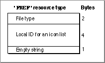

Legacy Document
Important: The information in this document is obsolete and should not be used for new development.
Important: The information in this document is obsolete and should not be used for new development.


The File Reference Resource
To link icons with the files types they represent and to allow users to launch your application by dragging document icons to your application icon, create a file reference resource for every icon list resource you create. A file reference resource is a resource with the resource type'FREF'. All file reference resources must have resource IDs greater than 128, and each must be marked purgeable.This section describes the structure of a file reference resource after it is compiled by the Rez resource compiler. The format of a Rez input file for a file reference resource differs from its compiled output form. If you are concerned only with creating a file reference resource, see "Creating File Reference Resources" beginning on page 7-17.
If you examine a compiled version of a file reference resource, as illustrated in
Figure 7-24, you find that it contains the following elements:
Figure 7-24 Structure of a compiled file reference (
- File type. This is the four-character code that identifies the type of file represented by this resource. File types are described in "Giving a Signature to Your Application and a Creator and a File Type to Your Documents" beginning on page 7-7.
- Local ID. The Finder uses this number to map the file type specified in this resource
to an icon list resource that is assigned the same local ID in the bundle resource. The icon list resource is described on page 7-55; the bundle resource is described in the next section.- Empty string. This element should always contain an empty Pascal string.
'FREF') resource